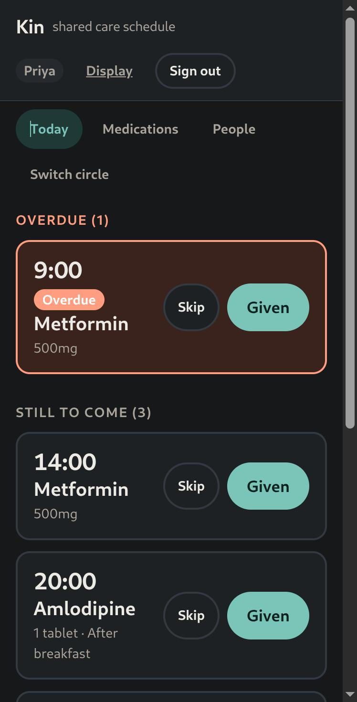

01 · REAL-TIME APP
Kin
Shared medication schedule for family carers
A web app so two family members caring for the same person never give the same dose twice. Everyone watching sees updates instantly over a WebSocket. If two people tap at the same moment, one database write wins and the other person is told.
Tested: swapping the atomic update for a normal read-then-write
fails the race test. Putting it back passes with 5 simultaneous taps.
View code ↗
